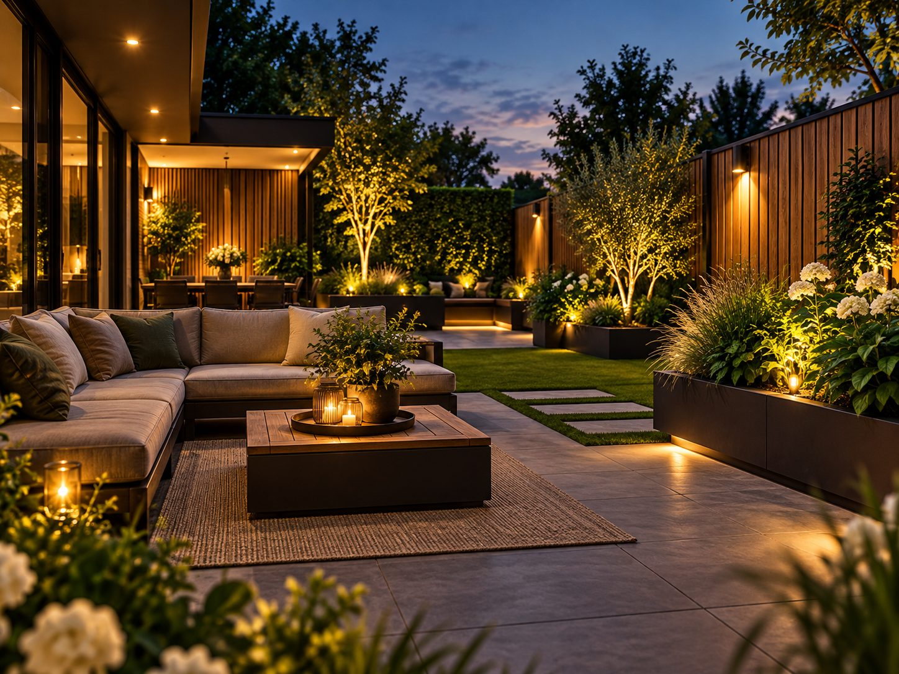
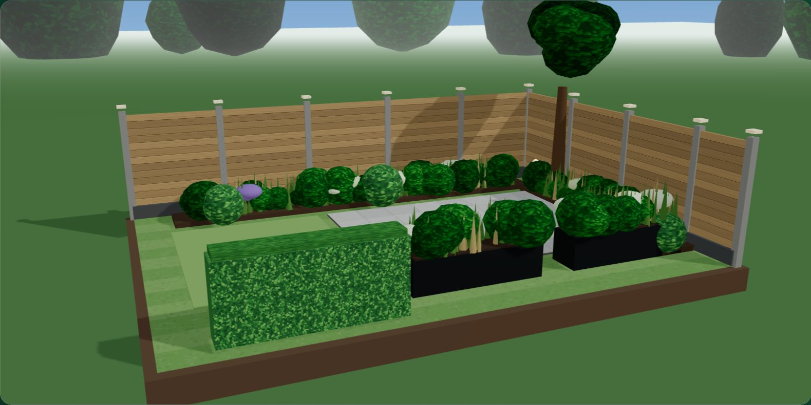
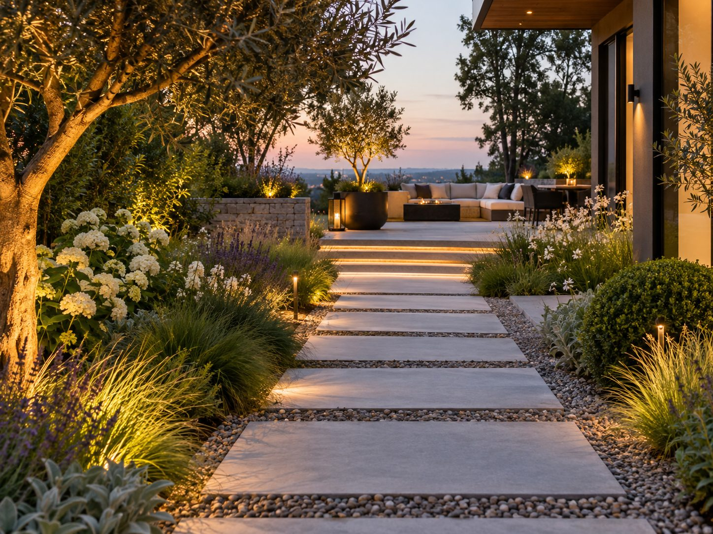
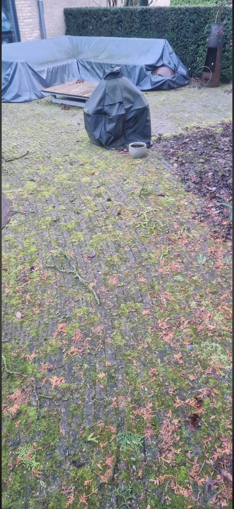
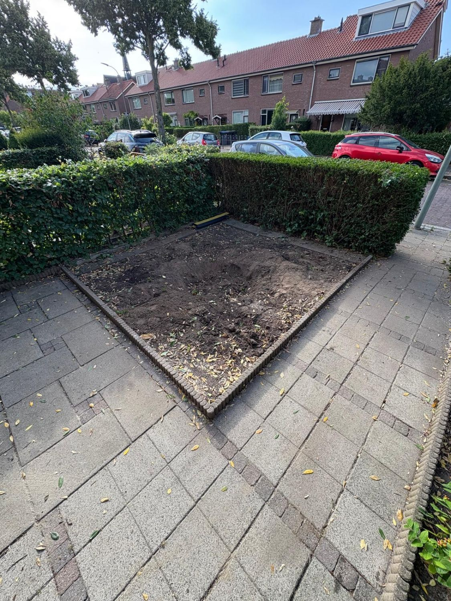

Hayalinizdeki bahçe, bizim ustalığımız
Tasarımdan uygulamaya. Çit, zemin döşeme, bahçe düzenleme ve bakım; profesyonel montajla.
Örnek görsel, tamamlanmış bir proje değildir
Teknik bilgi olmadan kendiniz tasarlayın
Bahçe fikrinizi 3B görün
Stilinizi, malzemenizi ve ölçülerinizi seçin ve çitinizin nasıl görüneceğini hemen görün. Nasıl ölçeceğinizi bilmiyor musunuz? O zaman adım adım yardımcı oluruz.

3B örnek yükleniyor…3B örnektir, gerçek bir proje değildir.
- Dordrecht'te ücretsiz keşif
- Profesyonel uygulama
- Size özel malzeme seçimi
- Net teklif
- Kişisel danışmanlık
Size nasıl yardımcı olabiliriz?
En uygun olanı seçin. Kararsız mısınız? O zaman memnuniyetle birlikte düşünürüz.









‘Örnek’ etiketli görseller olası uygulamalara örnektir; Sealcleaning'in tamamladığı projeler değildir.
Projelerimiz
Dordrecht ve Drechtsteden'deki kendi işlerimizden bir seçki.


Neden SEAL'i seçmelisiniz?
- Kişisel danışmanlıkİşi yapan kişiyle doğrudan konuşursunuz.
- Net anlaşmalarTeklifte nelerin dahil olduğu ve olmadığı yazar.
- UstalıkProfesyonel uygulama, özenli bitiş.
- Bölgede aktifDordrecht, Drechtsteden ve Rotterdam çevresi.
Yeni bir bahçeye hazır mısınız?
Bugün bağlayıcı olmayan bir teklif isteyin.